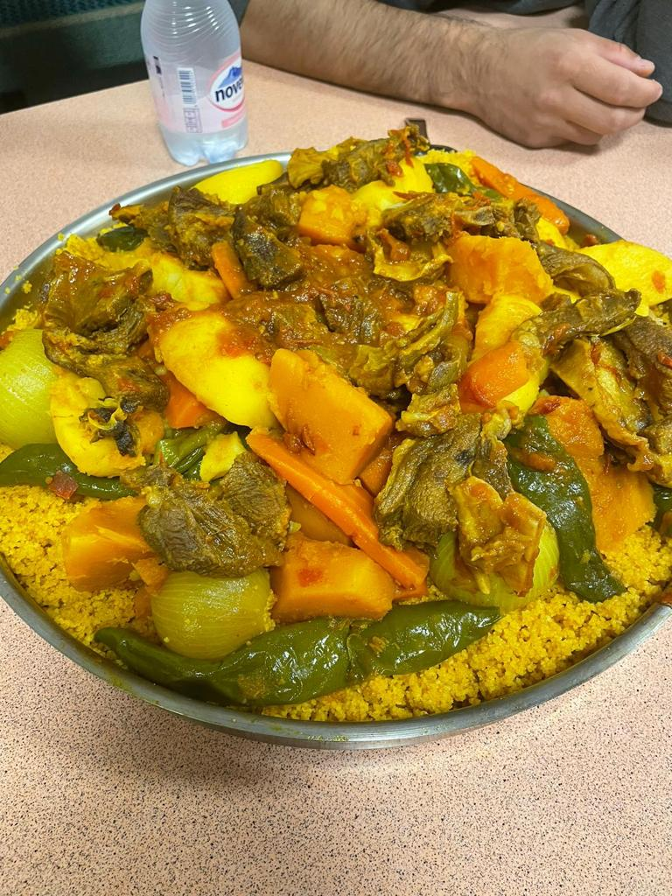

Cous Cous DELUX
Lerne, Couscous zu kochen und geniesse es.
Der 5 Sterne-Koch
Der Koch dieses traumhaften Essens ist der Schweizweit bekannte, der atemberaubende und erstklassige Autofahrer, Sheikh und Qari Teufiq. Er ist 65 Jahre alt, stammt aus Tunesien und lebt allein hier, während seine Frau und Kinder in Tunesien sind. Er kocht das gesündeste und Köstlichste Essen (nach meiner Mutter). Seine Hauptmission in der Schweiz ist es, den Menschen den Quran näherzubringen. Seit über 20 Jahren ist er hier und hat bereits Dutzende von Schülern unterrichtet. Er ist in der Schweiz bekannt und hat in Städten wie Basel, St. Gallen, Genf, Lausen und vielen anderen unterrichtet. Seit mehreren Jahren unterrichtet er nun in Winterthur und hat etwa 10 Schüler, zu denen auch ich gehöre. Er fährt Auto wie ein Rennfahrer, kocht wie Gordon Ramsay, ist Ernährungsberater und in Tunesien ehemaliger Staatsfeind Nummer 1. Seine Lebensgeschichte ähnelt einem Actionfilm. Ein unersetzlicher Mann, unser Sheikh.
Der Cous Cous Delux
Von diesem Couscous, das nach den Angaben des Kochs für 10 Personen gedacht war, hätten jedoch problemlos 20 Personen essen können (es gab noch ein zweites Blech). Im Couscous befanden sich etwa 3 kg Fleisch, 5-6 kg Gemüse und etwa 1 kg Couscous (ungekocht). Es war scharf und sehr gut gewürzt. Wahrscheinlich gehört es zu den besten Gerichten, die ich je in meinem Leben gegessen habe, bis zum heutigen Tag. In unserer Moschee schwärmen wir noch immer davon. Wir waren insgesamt 11 Personen, die davon gegessen haben, und wir haben fast alles aufgegessen. Nach dem Essen waren wir alle total erschöpft und wollten uns nur noch hinlegen und schlafen. Von diesem Cous Cous gegessen haben:
- Amin ibn Anwar (Ich)
- Yunus ibn Ibrahim
- Yunus ibn Shah
- Ibrahim Al-Albani
- Muhammed/Ibn Abu Bakr
- Abu Bakr/Abu Muahmmed
- Adelwahab Al-Algari
- Al-Mouchtar At-Tunisi
- Sheikh Teufiq
- Al-Maghrabi
- Abas As-Somali
Fazit
Abschliessend kann ich nur sagen, dass dieses Essen einfach köstlich war, und es gibt wirklich nichts daran auszusetzen. Ich habe beim Fleisch geholfen, aber ich hätte eine bessere Fleischauswahl treffen können, da das Fleisch laut dem Koch zu viel Fett hatte, und wir mussten eine Menge Fett abschneiden.